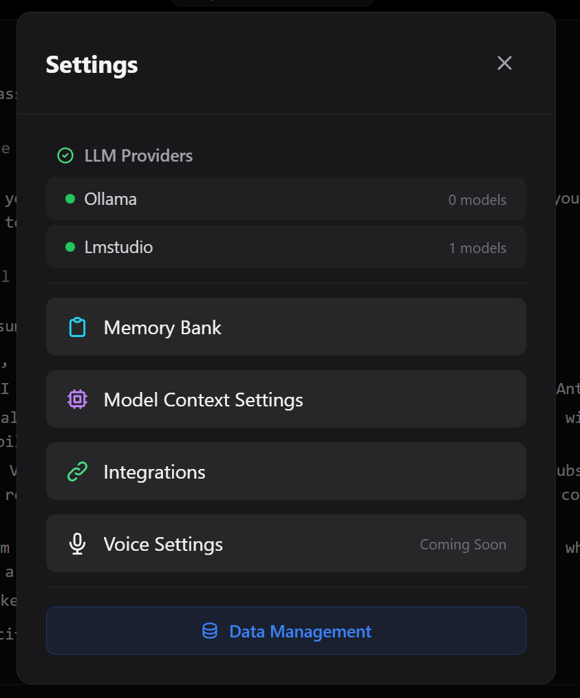
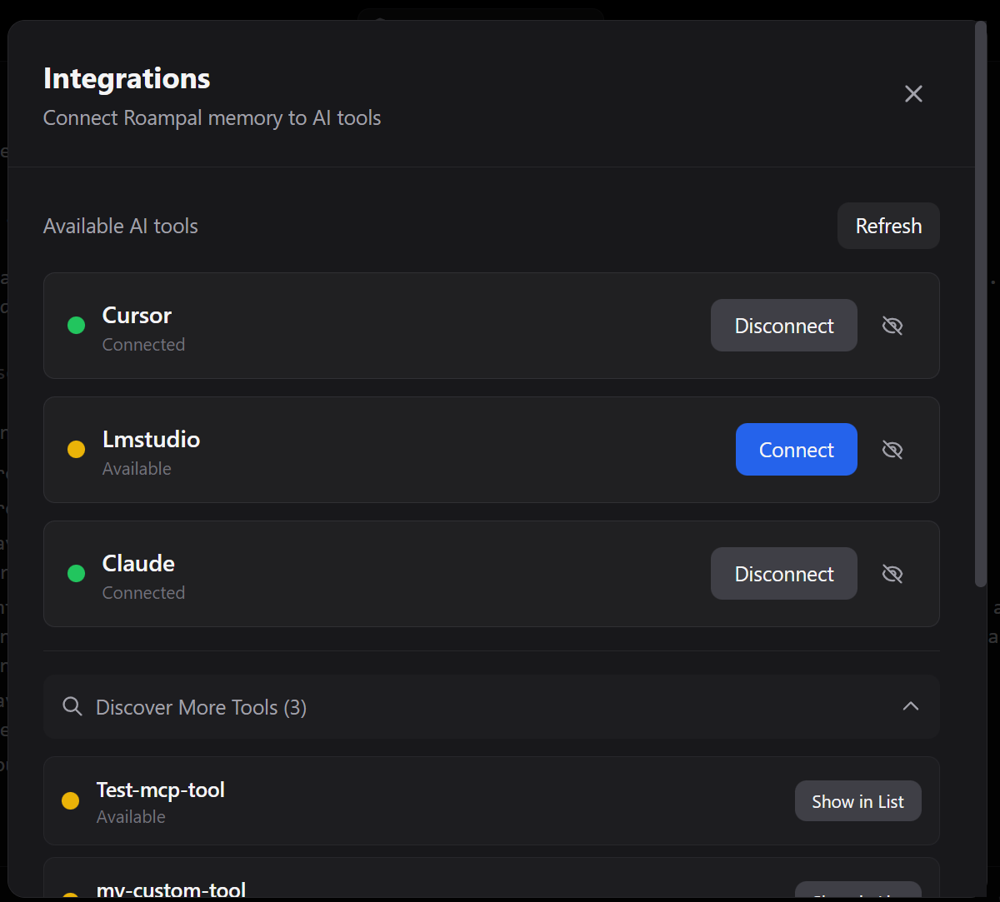
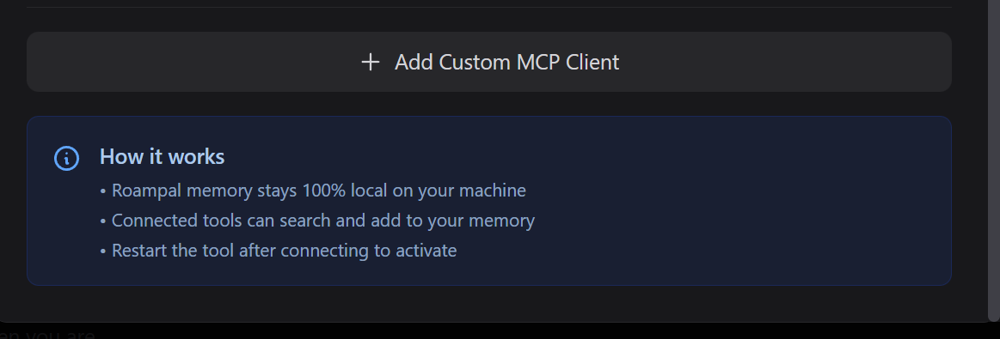

Memory that learns what works.
Your AI sees what helped before. Automatically.
Not just similarity—what actually worked. All stored locally on your machine.

--claude-code --opencode
Core: Works with Claude Code & OpenCode. Memories stored locally.
Desktop: 100% local with Ollama/LM Studio. GUI app + MCP tools. Buy on Gumroad
• User prefers: never stage git changes [id:mb_c3d4] (memory_bank)
The Problem With AI Memory Today
Most AI memory finds things that sound similar to your question.
But sounding similar doesn't mean it helped you before.
Here's an example:
You ask your AI: "What's a good restaurant for a date night?"
Your AI remembers two places you've tried before:
Memory A:
"That new romantic sushi place downtown"
You went there - food was disappointing
Memory B:
"The Italian place on Main Street"
You loved it - amazing experience
Regular AI picks Memory A because "romantic" and "downtown" sound like good date words.
Roampal picks Memory B because it remembers you actually had a great time there.
How does it know what worked?
Just talk naturally. The AI reads your response, determines if you were satisfied, and scores the memory in Roampal. No buttons to click, no ratings to give - it learns from the conversation itself.
We tested this:
Questions designed to trick the AI into giving the wrong answer.
| Approach | Got It Right | Improvement |
|---|---|---|
| Standard AI search | 10% | - |
| + Smarter ranking | 20% | +10 pts |
| Roampal (ranking + outcomes) | 60% at maturity | +50 pts |
Smarter ranking helps a little. At maturity, outcome tracking helps 5× more (+50 pts vs +10 pts).
It gets better the more you use it
We measured how well it finds the right answer over time.
Cold start (0 uses)
At maturity (20 uses)
Better than ranking alone
The more you use it, the better it gets at finding what actually helps you.
Why this matters:
Better answers with less noise. Roampal only retrieves what's proven helpful, not everything that sounds related. That means lower API costs, faster responses, and more accurate answers.
Roampal vs pure vector search
30 adversarial scenarios designed to trick similarity search. Real embeddings (all-mpnet-base-v2).
Vector DB accuracy
0/30 correct on adversarial queries
Roampal accuracy
12/30 correct — p=0.000135
When the semantically similar answer is wrong and the right answer doesn't sound related, vector search fails every time. Outcome learning finds what actually worked.
Technical details for researchers
4-way comparison: 200 tests (10 scenarios × 5 levels × 4 conditions) • Learning curve: 50 tests • Token efficiency: 100 adversarial scenarios
Full methodology & reproducible benchmarks
Your AI Gets Smarter Over Time
Traditional AI memory gets fuller. Roampal gets smarter.
Remembers What Worked
Good advice rises to the top. Bad advice sinks. Automatically.
Organized Memory
Short-term, long-term, permanent - your memories organized by how often you need them
Learns Your Patterns
Learns which tools work, which topics connect, and what advice helps you specifically
Instant Responses
Local search — no round-trip to a cloud server. All on your machine.
100% Privacy
All memory data stays on your machine. No cloud. No tracking. Your AI tool connects to its own API as usual.
How It Works
All of this is tested and verified. Want to see the details?
View Benchmark Source CodeSee It Learn In Real-Time
Bad Advice Fails
What's a good restaurant for a date night?
How about that new sushi place downtown?
Went there, wasn't great...
Good Advice Works
Any other suggestions?
There's that Italian place on Main Street - quiet atmosphere, great reviews.
Perfect! Had an amazing time there.
Next Time: Instant Recall
Need a restaurant recommendation for tonight
- Sushi place downtown: Didn't work out
- Italian place on Main St: Loved it
Based on what you enjoyed last time, I'd suggest the Italian place on Main Street again, or something similar in that area.
What Makes This Different
Learns What Works For You
Keeps track of which solutions actually help with YOUR problems. The more you use it, the better it gets at helping you.
AI: "Try meditating before bed" → It worked!
A week later...
You: "Can't fall asleep again"
AI: Remembers meditation worked → suggests it first
Watch It Work
See the AI search memory, create notes, and stream responses in real-time. Full transparency into what it's doing.
Searching your memories... → Found 3 helpful things... → Writing answer...
Cross-Conversation Memory
Remembers your preferences and learned patterns across ALL conversations. No need to repeat yourself.
AI remembers: She loves gardening (from a chat last month)
Suggests: Gardening-related gifts
How Memories Are Organized
How Memories Move From New to Permanent
Permanent Collections (No Promotion)
Outcome Detection Algorithm
Roampal uses LLM to detect outcomes from natural language:
- Positive signals: "that worked!", "perfect", "exactly what I needed"
- Negative signals: "didn't work", "that failed", "not helpful"
- Implicit signals: Topic changes, abandoning approach, asking similar question
# LLM analyzes conversation and detects outcome
if outcome == "worked":
score += 0.2 # Positive outcome
elif outcome == "failed":
score -= 0.3 # Negative outcome
elif outcome == "partial":
score += 0.05 # Partial successLearns Your Patterns
Roampal builds 3 interconnected Knowledge Graphs that learn different aspects of your memory:
1. Routing KG - "Where to Look"
Learns which memory collections answer which types of questions.
You ask: "What books did I read about investing?"
System learned: Questions about "books" → books collection (85% success)
Result: Searches books first, skips less relevant collections → faster answers
2. Content KG - "What's Connected"
Extracts people, places, tools, and concepts from your memories and tracks relationships.
Your memories mention: "Sarah Chen works at TechCorp as an engineer"
System extracts: Sarah Chen → TechCorp → engineer (with quality scores)
Result: "Who works at TechCorp?" → finds Sarah even without exact keyword match
3. Action-Effectiveness KG - "What Works"
Tracks which tools and actions succeed or fail in different contexts.
During a quiz: AI uses create_memory() to answer questions
System tracks: create_memory in "recall_test" → 5% success (hallucinating!)
System tracks: search_memory in "recall_test" → 85% success
Result: After 3+ failures, warns AI: "create_memory has 5% success here - use search_memory instead"
Together: Routing KG finds the right place, Content KG finds connected information, Action-Effectiveness KG prevents mistakes. All three learn from real outcomes.
Privacy Architecture
All data stored locally:
- Vector DB: ChromaDB (local files)
- Outcomes: stored as vector metadata in ChromaDB
- Knowledge graph: JSON file
- Desktop: Ollama or LM Studio (local inference)
- Core: uses your existing AI tool's LLM (Claude, etc.)
Zero telemetry. Your data never leaves your machine. Minimal network: PyPI version check on startup, embedding model download on first run.
Built for Developers
"Remembers my entire stack. Never suggests Python when I use Rust."
- ✓ Learns debugging patterns that work with YOU
- ✓ Recalls past solutions
- ✓ Builds knowledge of your architecture
Also used by writers, students, and founders who want AI that learns their context.
Persistent Memory for AI Coding Tools
Two commands. Your AI coding assistant gets persistent memory. Works with Claude Code and OpenCode.
Works with Claude Code & OpenCode
Auto-detects installed tools. Restart your editor and start chatting.
Target a specific tool: roampal init --claude-code or roampal init --opencode
Automatic Context Injection
Other memory tools wait for you to ask. Roampal injects context automatically — before every prompt, after every response. No manual calls. No workflow changes.
Before You Prompt
Context injected automatically. Claude Code uses hooks, OpenCode uses a plugin — same result. Your AI sees what worked before.
After Each Response
The exchange is captured and scoring is enforced — not optional. Both Claude Code hooks and OpenCode plugin handle this automatically.
Memory Tools via MCP
Core: 6 tools | Desktop: 6 tools
search_memory
add_to_memory_bank
update_memory
delete_memory
record_response
score_memories
score_memories is enforced automatically — hooks (Claude Code) and plugin (OpenCode) ensure scoring on every exchange.
Desktop uses get_context_insights + archive_memory instead of Core's delete_memory + score_memories, and bundles scoring into record_response.
Core (Claude Code & OpenCode) vs Desktop MCP
| Core | Desktop MCP | |
|---|---|---|
| Context injection | Automatic (hooks & plugin) | Manual (prompt LLM) |
| Outcome scoring | Enforced | Opt-in |
| Learning | Every exchange | When you remember to score |
| Best for | Zero-friction workflow | Multi-tool power users |
Using Desktop MCP? Tips for better results:
- Add to system prompt: "Check search_memory for context before answering"
- Remind mid-conversation: "Check memory for what we discussed about X"
- Record outcomes: "Record in Roampal - this worked" or "...failed"
With roampal-core (Claude Code & OpenCode), this happens automatically — hooks and plugin inject context so the AI knows to use memory tools.
Why outcome learning beats regular memory:
Your AI Remembers Everything. But Does It Learn? → Your AI Keeps Forgetting What You Told It →roampal-core is free and open source. Support development →
Connect via Roampal Desktop
Roampal Desktop can connect to any MCP-compatible AI tool via its Settings panel. Note: Desktop MCP provides memory tools but does not include hooks-based context injection or automatic scoring — for that, use roampal-core with Claude Code or OpenCode.
Open Settings
Click the settings icon in Roampal's sidebar to access configuration options.


Navigate to Integrations
Go to the Integrations tab. Roampal automatically detects MCP-compatible tools installed on your system.
Auto-detects: Any tool with an MCP config file (Claude Code, OpenCode, Cline, and more)
Connect to Your Tool
Click Connect next to any detected tool. Roampal automatically configures the MCP integration.
Don't see your tool?
Click Add Custom MCP Client to manually specify a config file path.

Desktop Memory Tools (6):
get_context_insights
search_memory
add_to_memory_bank
update_memory
archive_memory
record_response
Restart Your Tool
Close and reopen your connected tool. Memory tools will be available immediately.
Auto-Discovery
No manual JSON editing required
50+ Languages
Bundled paraphrase-multilingual-mpnet-base-v2, no Ollama needed
Cross-Tool Memory
Memories shared across all connected tools
Works Offline
Fully local after initial setup
Need Help?
Connection not working? Try disconnecting and reconnecting in Settings → Integrations, or reach out to the community for support.
Join Discord CommunityReleases
roampal-core
v0.3.6 - Retrieval Fairness & Token Optimization
Released February 2026
78% token reduction via exchange summarization. Retrieval rebalanced so memory_bank no longer dominates open slots. Wilson scores carry through promotion instead of resetting to zero. Platform-split scoring architecture — main LLM handles everything in Claude Code, sidecar stays for OpenCode.
Exchange Summarization
Memories store ~300 char summaries instead of full exchanges. Context injection drops from 56K to 12K tokens over 30 turns — 78% reduction.
Retrieval Fairness
memory_bank Wilson blend moved to 50/50, base multiplier halved to 0.4, entity boost extended to all collections. Working and history can now compete in open slots.
Sidecar Scoring for OpenCode
OpenCode now uses sidecar free models for per-memory relevance scoring and exchange summaries, keeping the main LLM focused on responses. Claude Code continues using its main LLM for all memory operations.
View Full Details
- Exchange summarization: main LLM (Claude Code) or sidecar (OpenCode) writes ~300 char summaries — 78% token reduction
- Auto-summarization: 1 old memory cleaned up per exchange, zero config required
- memory_bank Wilson blend: 80/20 → 50/50 (outcomes matter more after 3 uses)
- memory_bank base multiplier: 0.8 → 0.4 (still boosted, not dominant)
- Wilson scores carry through promotion — no more reset to zero on tier change
- Entity boost extended to all collections (was memory_bank only)
- Unknown outcome penalty:
-0.05raw score (unused memories drift toward cleanup) get_context_insightstool removed — context injection fully automatic via hooks/plugin- Per-memory sidecar scoring with 7-rule relevance heuristic (OpenCode)
- Compaction recovery: last 4 exchange summaries injected on cold start and after compaction
- Platform-aware
score_memoriestool: full schema for Claude Code, lean for OpenCode - New CLI commands:
roampal summarize,roampal score,roampal context - Sidecar backend chain: Custom → Haiku API → Zen → Ollama →
claude -p - Time-weighted score deltas removed — all scores are flat values regardless of memory age
View Previous Releases (v0.3.5 and earlier)
v0.3.5 - Precision Scoring & Security
February 2026 - Lean scoring prompts save ~60K tokens over 30 turns. Rewritten tool descriptions with memory hygiene and verification discipline. Security hardening: CORS, input validation, process management.
Release Notes →v0.3.4 - OpenCode Scoring Fixes
February 2026 - Deep-clone fix for garbled UI, deferred sidecar scoring to prevent double-scoring, scoring prompt now asks for both exchange outcome and per-memory scores.
Release Notes →v0.3.3 - OpenCode Plugin Packaging
February 2026 - Fixes OpenCode packaging bug, smart email collection marker, memory awareness preamble, robust tool detection for fresh installs, relative timestamps in KNOWN CONTEXT.
Release Notes →v0.3.2 - Multi-Client Support
February 2026 - Claude Code + OpenCode via shared single-writer server. 4-slot context injection, self-healing hooks, OpenCode TypeScript plugin.
Release Notes →v0.3.1 - Reserved Working Memory Slot
January 2026 - Guarantees recent session context always surfaces in automatic injection. 1 reserved working slot + 2 from other collections.
Release Notes →v0.3.0 - Resilience
January 2026 - Fixes silent hook server crashes, health check tests embeddings, auto-restart on corruption
Release Notes →v0.2.9 - Natural Selection for Memory
Wilson scoring for memory_bank, stricter promotion requirements, archive cleanup.
Release Notes →v0.2.8 - Per-Memory Scoring
Score each cached memory individually. Wilson score fix, FastAPI lifecycle management.
Release Notes →v0.2.7 - Cold Start Fix + Identity Injection
Critical fixes for identity injection and cold start bloat.
Release Notes →v0.2.6 - Identity Prompt + Profile-Only Cold Start
January 2026 - Identity detection prompts, profile-only cold start, recency sort fix
Release Notes →v0.2.5 - MCP Config Location Fix
January 2026 - Critical fix: roampal init now writes to ~/.claude.json instead of invalid ~/.claude/.mcp.json
Release Notes →v0.2.4 - Scoring Reliability Fix
January 2026 - Fixed related parameter handling in score_response fallback path
Release Notes →v0.2.3 - Outcome Scoring Speed
January 2026 - Critical performance fix: score_response latency 10s → <500ms
Release Notes →v0.2.2 - Cursor IDE Support (currently broken due to Cursor bug)
December 2025 - Cursor MCP support (non-functional due to Cursor-side bug), always-inject identity, ghost registry, roampal doctor command
Release Notes →v0.2.1 - MCP Tool Loading Hotfix
December 2025 - Emergency fix for fresh installs failing to load MCP tools
Release Notes →v0.2.0 - Action KG Sync Fix
December 2025 - Fixed critical "reading your own writes" bug in knowledge graph
Release Notes →v0.1.10 - Update Notifications in MCP
December 2025 - Claude Code users now see update notifications via MCP hook
Release Notes →v0.1.9 - ChromaDB Collection Fix
December 2025 - Fixed critical bug where MCP connected to wrong ChromaDB collection
Release Notes →v0.1.8 - Delete Memory (Hard Delete)
December 2025 - Renamed archive_memory → delete_memory, now actually removes memories
Release Notes →v0.1.7 - Working Memory Cleanup
December 2025 - Fixed cleanup of old memories, added update notifications, archive_memory fix
Release Notes →v0.1.6 - Score Response Fallback
December 2025 - Fixed score_response returning "0 memories updated", book management initialization
Release Notes →v0.1.5 - DEV/PROD Isolation
December 2025 - Run dev and prod instances simultaneously without collision
Release Notes →Roampal Desktop
v0.3.0 - Performance & Polish
Released January 2026
TanStack Virtual migration for smoother scrolling, streaming fixes, message virtualization, and 50+ bug fixes. Security hardened with ZIP traversal, XSS, and query logging fixes.
TanStack Virtual
Smooth scrolling for conversations with 5000+ messages. No more lag or jank.
Streaming Fixes
Reliable token-by-token display. Fixed tool chaining and reconnection issues.
50+ Bug Fixes
Security hardened: ZIP traversal, XSS, query logging. Plus message virtualization and scrollbar fixes.
View Full Details
- TanStack Virtual migration - smooth scrolling for 5000+ messages
- Streaming fixes - text overlap, thinking icon, loading indicator
- Tool interleaving - text and tools now display in correct order
- Cancel button fix - actually stops generation now
- Surfaced memories display - see what memories were used
- Context overflow detection - warns before context limit is exceeded
- Model switch race condition fixed
- Security: ZIP path traversal, XSS in citations, query logging fixed
- 876 tests passing (509 frontend, 367 backend)
View Previous Releases (v0.2.12 and earlier)
v0.2.12 - Memory Attribution Scoring
January 2026 - LLM memory attribution, virtualization fix, selective scoring parity
Release Notesv0.2.11 - Critical Performance Fixes
January 2026 - KG 25x faster, message virtualization, store subscription fix
Release Notesv0.2.10 - ChromaDB 1.x + Query Timeouts + Ghost Entry Handling
December 2025 - ChromaDB upgraded to 1.x, query timeouts prevent UI freezes, ghost entry handling
Release Notesv0.2.9 - Ghost Registry + Timeout Protection + Performance
December 2025 - Fixes book deletion ghost vectors, adds timeout protection, 3x faster startup
Release Notes →v0.2.8 - MCP Security + No Truncation + Update Notifications
December 2025 - MCP security hardening, full memory content returned, in-app update notifications
Release Notes →v0.2.7 - Architecture Refactoring
December 2025 - Monolithic file refactored into 9 focused, testable modules. 260 tests passing
Release Notes →v0.2.6 - Unified Learning + Directive Insights + Contextual Embeddings
December 2025 - Internal LLM contributes to Action KG, actionable get_context_insights prompts, ~49% improved book retrieval
Release Notes →v0.2.5 - MCP Client + Wilson Scoring + Multilingual Ranking
December 2025 - Connect to external MCP tool servers, statistical confidence scoring, 14-language smart sorting
Release Notes →v0.2.1 - Action-Effectiveness KG + Enhanced Retrieval + Benchmarks
November 2025 - 3rd Knowledge Graph learns tool effectiveness, enhanced retrieval pipeline
Release Notes →v0.2.0 - Learning-Based KG Routing + MCP Integration
November 2025 - Intelligent knowledge graph routing, enhanced MCP with semantic learning storage
Release Notes →v0.1.6 - Hotfix Release
November 2025 - Critical fixes for collection-specific search and KG success rate accuracy
Release Notes →v0.1.5 - Multi-Provider Support
October 2025 - Persistent memory bank, document upload (Books), 100% local with Ollama integration
Release Notes →Frequently Asked Questions
How is this different from cloud AI memory (ChatGPT, Claude, etc.)?
Cloud AI stores what you say. Roampal learns what works.
Three key differences:
- It learns from results: When something helps you, Roampal remembers. When it doesn't work, it learns from that too. Regular AI just stores what you said.
- Local-first privacy: Your data stays on your machine. No cloud servers, no recurring subscriptions. roampal-core is free and open source. Desktop is a one-time $9.99 purchase.
- True ownership: You own your data and your memory. Export everything anytime. No vendor lock-in.
What models does it support?
roampal-core: Works with whatever model your AI tool already uses (Claude, GPT, etc.). Memory and scoring are model-agnostic — just pip install roampal.
Roampal Desktop: Supports local models via Ollama or LM Studio:
- Llama - Meta's free models
- Qwen - Great for many languages
- Mixtral - Fast and efficient
Install from Desktop Settings.
Does it work offline?
roampal-core: Memory storage and retrieval is fully local. Your AI tool (Claude Code, OpenCode) still connects to its own API provider as usual.
Roampal Desktop: Fully offline after downloading models. No internet required.
What are the system requirements?
roampal-core: Python 3.10+, minimal disk space. Runs on anything that runs Python.
Roampal Desktop: Minimum 8GB RAM, 10GB free disk space. Recommended: 16GB RAM and a GPU for faster local model responses.
How do I export my data?
roampal-core: All data is stored locally in your data directory (e.g. %APPDATA%/Roampal/data on Windows). Copy the folder to backup.
Roampal Desktop: Go to Settings → Export. Pick what you want to backup and download a zip file.
Why charge if it's open source?
roampal-core is 100% free. Install with pip install roampal and use it forever.
Roampal Desktop ($9.99 one-time) gets you:
- Pre-packaged executable - No Python setup required
- Bundled dependencies - Everything included
- Tested build - Ready to run out of the box
- Lifetime updates - All future releases included
You can also support Core development with an optional subscription.
Is Roampal's advice always reliable?
No. Roampal uses AI models that can generate incorrect information, hallucinate facts, or reflect training biases.
Always verify critical information from authoritative sources. Do not rely on AI-generated content for:
- Medical, legal, or financial advice
- Safety-critical systems or decisions
- Production code without thorough review
What are the MCP tools and what do they do?
roampal-core (Claude Code & OpenCode) provides 6 MCP tools:
- search_memory - Finds relevant memories based on what you're discussing
- add_to_memory_bank - Stores permanent facts about you (preferences, identity, goals)
- update_memory - Corrects or updates existing memories
- delete_memory - Removes outdated information
- score_memories - Scores cached memories from previous context (enforced automatically via hooks)
- record_response - Stores key takeaways from significant exchanges
Roampal Desktop provides 6 MCP tools:
- get_context_insights - Returns context about the user (Core handles this automatically via hooks)
- search_memory, add_to_memory_bank, update_memory - Same as Core
- archive_memory - Soft-deletes outdated information (vs Core's hard delete)
- record_response - Combined outcome scoring + key takeaways in one tool
With roampal-core, context injection and scoring happen automatically via hooks. With Desktop, you may need to prompt the AI to use memory tools.
How does Roampal know when something worked?
Just talk naturally. The AI reads your response, determines if you were satisfied, and scores the memory in Roampal.
For example:
- If you say "thanks, that fixed it" → the memory that helped gets scored higher
- If you correct the AI → that memory gets scored lower
- If you move on without comment → no strong signal either way
No buttons to click, no ratings to give. It learns from the conversation itself.
Why Roampal Exists
Roampal is built on a simple idea: software that respects you. No hidden fees, no data collection, no lock-in.
- Open source from day one (Apache 2.0 License)
- One-time payment, not subscription trap
- Zero telemetry, zero tracking
- Your data stays on your machine
- Free to View on GitHub forever
Stop Re-Explaining Yourself
AI that grows with you. Learns from outcomes. Tracks what actually works. All data stays on your machine.